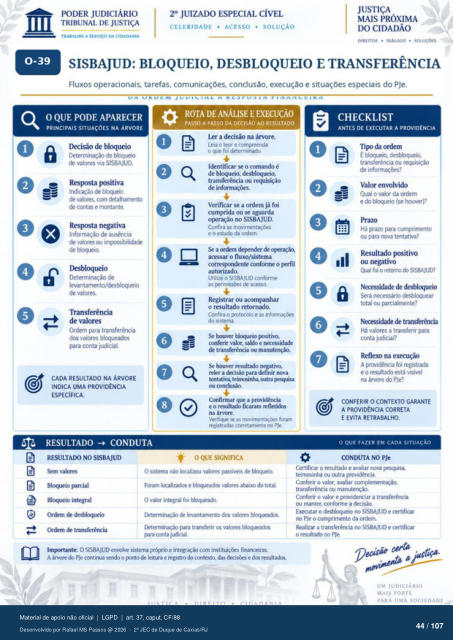

Transcrição automática em português, ainda não revisada. Confira grafia, prazos e termos jurídicos na imagem e no PDF antes de utilizar.
TRABALHO A SERVIÇO DA CIDADANIA
CELERIDADE • ACESSO • SOLUÇÃO
DlREITos • DIÁLOGO • SOLUÇO"
SISBAJUD•. BLOQUEIO, DESBLOQUEIO E TRANSFERÊNCIA
Fluxos operacionais. tarefas, comunicações. conclusão, execução e situações especiais do PJe.
O QUE PODE APARECER
PRINCIPAIS SITUAÇÓES NA ÁRVORE
[kcisão de Ncxpeio de blmtEio
de valores wa SISBAJUD. Respsta psitiva
de valores. com detalharnento de contas e montante.
Reqxysta negativa Informação ausência
de valores irnpssiblidack de bkxveia
Determinação de levantamento/desblcxveio
de valores. Transferência
de valores Ordem para transferência
dos vakyes blmueadOS para conta judicial.
CADA NA ÁRVORE
INDICA UMA PROVIDÊNCIA
ESPECiFlCA.
RESULTADO CONDUTA
A DE ANÁLISE E EXECUÇÃO
Ler a decisão na árvore Leia o teor e ccympreenda
0 fd determinú. Identificar se o comando é
de bkxlueio. desbl(Nueio, transferência ou requisição
de Verificar se a ordem já foi
cumprida ou se aguarda OFraçáo no SISBAJUD.
Confira as movimentações e o estado da ordem
a orckrn ckrrnder de acessar o fluxo/sistema
corresprdente confirme 0 Frfil autorizado.
Utilize o SISBAJUD conf«rne as prrnissdE de acesso.
Registrar ou acompanhar o resultado retornado.
Confira o votocolo e as do sistema
conferir valor, sakio e de transferência ou manutenção.
houver resultado rekr a decisão para
tentativa, mitra Fquisa corrlusüx
Confirmar que a provkiência e o ficaram refktidcs
Venfique se as movirnentaç¿es foram registruias corretarnente no PJe
OQUE SIGNIFICA
CHECKLIST
ANTES DE EXECUTAR A PROVIDÊNCIA
III Tip da ordem
É blmueó, dest*oqueio, transferência ou
de Valor envolvido
Qual 0 valor da ordem e do blcnueio (se tu:xwer)?
Há Vazo para cunvimento ou para nova tentativa?
Resultado pcxitivo ou negativo
foi 0 retorno SISBAJUD? Necessidacie desbkxveio
desblcAuear total ou parcialmente?
transÊrência Há valores a transferir para
conta judicial? Reflexo na
A prov+ncia foi e 0 está visivel
na árvore ú) PJe?
RESULTAM) NO SISBAJUD
valores parcial
BIMIueio integral (Yckrn
Ordem transferência O sistema não kxalizou valores passiveis de Ncxltrio
e abaixo tota O valor integral foi
levantamento val«es para transferir os valores blcxltrús
para CMIta Júial. Imprtante: O SISBAJUD envolve sistema pró'Xio e integraçü:» corn instituiçüs financeiras
A árvore me cmtinua o de leitura e registro das e
CONFERIR O CONTEXTO GARANTE
A PROVIDENCIA CORRETA
E EVITA RETRABALHO.
O QUE FAZER EM CADA SITUAÇÃO
CONDUTA NO PJe
Certificar o resultado e avaliar nova Fsquisa. teirnosinha Outra
Conferir o valor, avahar complementaçao, transferérria ou manutenção.
Conferir o valor e providenciar a transferêrria ou manter. conforrne a d«isáo_
Ex«utar 0 SISBAJUD e certificar PJe o cumprimento da ordem.
Realizar a transferência no StSBAJUD e certificar 0 resultub PJe.
UM JUDICIÁRIO
MAIS FORTE
Ver também o infográfico original (página 44)
